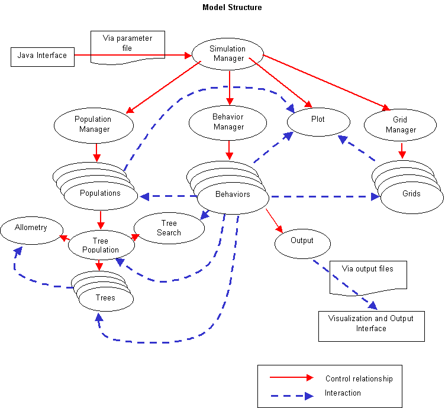

Here is a diagram showing the relationships between the various object types:
The administrative classes do memory management, object access control, and triggering of basic run events.
The concepts of inheritance and typecasting are important for understanding how objects relate to each other in the code. An object which is created from a derived class can be treated in the code as an object of both its own class and all its ancestor classes. The administrative classes rely on this in order to deal generically with the data classes.
The Simulation Manager controls all aspects of the run. The Simulation Manager contains the functions which the user uses (via the interface) to input files and trigger a run.
The Simulation Manager performs much of its work through the Object Managers. There is one object manager for each of the three basic data class types - behaviors, grids, and populations. More on the Object Managers below.
Most objects within the model have access to the Simulation Manager at all times. The Simulation Manager handles requests from objects for access to other objects; this is the mechanism by which the behaviors find the data objects they need to act on. Almost any object is available to almost any other object at any time through the Simulation Manager.
Key functions:
The three object managers are descended from clObjectManagerBase. There is very little that they extend from this base class, so we'll use the base class to illustrate their functionality.
Object Managers are responsible for creating and destroying the objects in their care, as well as getting them their setup data and providing access to them to other objects (via the Simulation Manager).
Key functions:
The Behavior Manager requires a little more explanation. It gets its list of Behaviors from the parameter file. It then creates the Behaviors in the order in which they are listed in the parameter file. The Behaviors then do everything else in this same order - before, during, and after a run.
The three main data class types in SORTIE are the Grid, the Behavior, and the Population. These are the "worker" objects - they perform all the work of the simulation.
While there are classes called clBehaviorBase and clPopulationBase, you would never instantiate objects directly from these classes. They simply provide an interface so that they can be managed by the Object Managers. (Grids are another story - more on them below.) When it's time to make an actual meaningful Behavior, for instance,you would start by making a new class that inherits from clBehaviorBase. You would then override the functions you needed so that your Behavior did what you wanted it to. So, for most classes in the model, a run would contain only one object of that class. Classes do not tend to be very generic in SORTIE.
This is a virtual base class for the three "workers" - Grids, Populations, and Behaviors. Its purpose is to allow the simulation and object managers to pass these worker objects back and forth generically.
clWorkerBase contains functions which you can count on being triggered at specific times throughout the model. If you want a descendent class to perform some action at a given time, you can override the necessary function.
Key functions:
When a new parameter file is loaded, all clWorkerBase-descended objects are destroyed and created afresh.
Grids hold spatially variable data. Their main purpose is to be a repository for data, rather than doing any real work of their own. Since there isn't much variability needed to do this job, Grid objects are instantiated directly from clGrid instead of descendant classes.
Grid objects count on Behaviors to give them their data and keep it updated. They protect the Behaviors from needing to understand much about how the plot is shaped.
The data for an object of clGrid is held an array of records. The array is 2D and corresponds to the grid's plot resolution; one array bucket is one grid cell's values. The grid cells are rectangular in shape. The grid is very flexible about what can be stored in the records; all records across the grid must be uniform, but they can possess any number and combination of float, integer, character string, and boolean values. Each one of these values is called a "data member" and is accessed through a code that the grid gives to you when you tell it what data members you want it to have during setup.
Grids can be created directly from the parameter file or by a Behavior. Behaviors have complete control over the data member structure of a grid. A Behavior which is creating a Grid tells it how many data members of each data type it wants, and then registers each one individually with the Grid by passing the name of that data member. The Grid responds with the code that the Behavior must use to access the value in that data member in the future.
IMPORTANT! As noted above, grids can be created directly from a parameter file, and this will happen BEFORE the behavior setup occurs. This means that if a behavior is able to take advantage of arbitrary initial conditions, it should check for the pre-existence of a grid before attempting to create it. Calling the grid creation method will silently overwrite a grid of that name that already exists.
Grids are public; once a Behavior has created one, it is accessible by any other Behavior.
Grids also have built-in support for "packages". Packages are additional records which are attached to a grid cell. Any number of packages can be added to a grid cell in order to keep track of events over multiple timesteps, or to hold additional values to be used for calculating main grid values. Packages can have their own data structure separate from the parent grid.
A possible future extension to this class is to allow variable grid cell resolution across the plot.
Key functions:
Base class for all behaviors. Behaviors are the actors in the model - they work on the Grid and Population data objects. The sky's the limit on what a Behavior might be written to do. They can both perform actual simulation calculations, or they can do other work associated with the simulation, such as writing output.
When a new behavior is written, a new class for that behavior is descended from clBehaviorBase. The proper functions are overridden, and then the new class is added to the Behavior Manager to let it know about this class.
Behaviors are always triggered in the same order at every point within a run. This means that if Behavior 2 counts on Behavior 1 to do something specific prior to Behavior 2 during each timestep, it can check for the existence of Behavior 1 during setup time. If Behavior 1 exists and has already been set up, then Behavior 2 can count on always having Behavior 1's most recent output.
Behaviors have the option to add new data members to trees. Only one Behavior should add a data member, even if multiple Behaviors will access it. Behaviors must set in their constructors how many new data members they desire, so that the tree population will be ready for them when it comes time to register them during setup.
Behaviors are applied in the parameter file to specific tree species/type (life history stage) combinations. Behaviors may find it hard to work with trees to which they have not been applied. For instance, they can't add a data member to another tree species or type. Behaviors do not, of course, have to be applied to tree species and types if they don't need to work with trees.
Key functions:
Officially, there is a Population base object, but since there is only one Population object, we can gloss over the base class for now.
The Tree Population object manages all objects of class clTree. Any Behavior wishing to work with trees has to go through the Tree Population to do it.
Trees can be created in the parameter file from initial densities or from a tree map. Behaviors can also create trees directly. Once trees are created, the Tree Population doesn't do anything to them. It depends on Behaviors to tell it when and how to update trees and when to create and destroy them.
The trees are organized in a hash table which sorts them by location and height. The Tree Population's main sophistication is in retrieving specific trees for Behaviors.
If Behaviors wish to add data members to trees, they ask the Tree Population to do that. Once the tree data structure has been properly assigned, the Behaviors work directly with the trees to update the values within that data structure.
Key functions:
The Plot object is a unique case. It Inherits from clWorkerBase like Grids, Populations, and Behaviors, but does not belong to an Object Manager. It is managed by the Simulation Manager directly.
The Plot object manages aspects of plot geometry. It frees other objects from having to worry about plot size and shape.
Key functions:
This is a very flexible class for objects which represent trees. Trees do not have a pre-defined data structure; instead they have one array each for variables of type float, integer, character string, and boolean. The members of these arrays, called "data members", are assigned at runtime.
The Tree Population defines certain basic data members such as X and Y. All other data members are assigned by Behaviors. Each data member can be registered by one, and only one, Behavior, although any other Behaviors may access it and change its value.
It is not a trivial thing to add a data member to the tree data structure. It is important to remember that a new data member represents thousands, or even tens of thousands, of new memory allocations.
Trees receive requests to update their values. In the background, they then tell the Tree Population about the requested update. The Tree Population can then keep them organized at all times, or even reject a requested update if it is inappropriate.
This class is not descended from clWorkerBase. It is a helper class to Tree Population which manages a single tree search request. An object of this class actually does the tree search. It contains functions which are optimized for different search types.
The way the species and type information is stored in the tree search object is coded for maximum efficiency. The information is essentially boolean; for each species or type, is it included or not? We take advantage of the binary storage of integers to store our data. We use an int to store each set of values and treat the int as an array of boolean values. The unsigned long int that holds species can hold 32 species' worth of information (since it is 32 bits long); the short int for type stores 8 bits, which is three bits more than we need. We "index" the array from right to left - the rightmost bit is species 1.
This class keeps tree allometric relationships and data in one place for any object's reference.